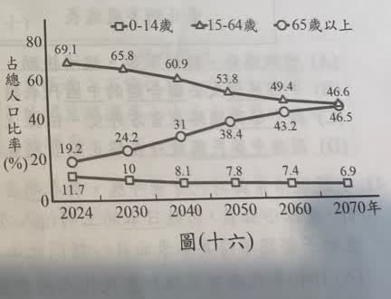
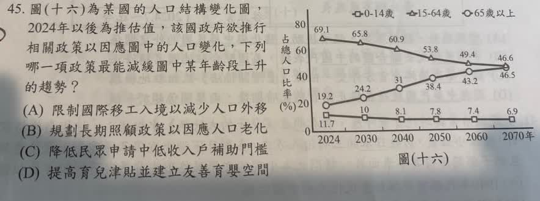

分享原卷｜第45題
完整原題
| 年 | 0～14歲 | 15～64歲 | 65歲以上 |
|---|---|---|---|
| 2024 | 11.7 | 69.1 | 19.2 |
| 2030 | 10 | 65.8 | 24.2 |
| 2040 | 8.1 | 60.9 | 31 |
| 2050 | 7.8 | 53.8 | 38.4 |
| 2060 | 7.4 | 49.4 | 43.2 |
| 2070 | 6.9 | 46.6 | 46.5 |

先想一想，再查看答案、解說與原圖
逐項解析
| 選項與原句 | 判讀 | 句意與判斷理由 |
|---|---|---|
| (A) 限制國際移工入境以減少人口外移 | 不選 | 限制外來移工與減少本國人口外移不是同一件事，也非直接提升出生人口的作法。 |
| (B) 規劃長期照顧政策以因應人口老化 | 不選 | 長照回應老化後的照護需要，但不能因此直接減緩65歲以上人口占比上升。 |
| (C) 降低民眾申請中低收入戶補助門檻 | 不選 | 是生活扶助政策，與改變人口年齡結構的直接關聯不如D。 |
| (D) 提高育兒津貼並建立友善育嬰空間 | 應選 | 降低養育負擔、改善育兒環境，以促進生育，較能從人口結構面減緩老年占比上升。 |
詳細說明與解題步驟
先讀圖：上升的圓點線是65歲以上人口占比，從2024年的19.2%上升到2070年的46.5%。另外兩組占比下降。題目問的是「減緩上升趨勢」，不是只問「怎樣照顧更多老人」。
老年人口占比＝65歲以上人口數÷總人口數。D以友善育兒條件支持生育，目的在增加出生人口，長期有助趨緩人口老化速度，四選項中最切題。不是說一發津貼必定提高生育率或立即扭轉結構。
B的長照政策很重要，但重點在因應已發生的人口老化及照護需求，不是降低老年人口所占比例；若題目改問如何因應老人照護需求，B才會直接對應。
原AI選B，理由把「減緩老年占比上升」偷換為「減輕老化照護衝擊」，並以幼年占比下降而排除育兒政策，推論有誤。應按原題問法及原卷紅筆D選D，保留原題與原圖，不把題目改成問長照。
圖中2024年以後是推估，並非已發生的未來實績。本題保留「某國」及原圖數字，不以現在的新人口推估覆寫原卷。
核對：[國發會人口推估簡報〈人口未來課題〉：提升生育率、減緩人口老化速度；長照等則為完善老年保障](https://ws.ndc.gov.tw/001/administrator/10/relfile/0/13729/77412825-9a15-4fe1-ba3e-41138271f148.pdf)。
① 題目問減緩占比上升
先依原卷圓點線：65歲以上占比由2024年19.2%，推估到2070年46.5%。這題問減緩上升趨勢，不只是問如何照顧更多長者。
② 育兒支持：從人口結構著手
D提高育兒津貼、建立友善育嬰空間，目的在減輕養育負擔、支持生育，長期有助減緩老化速度。不是說發津貼就必定或立即扭轉趨勢。
③ 長照重要，但回答的是照護需求
B規劃長照能回應現有照護需求，卻不能直接當作降低老年人口占比的方法。題目若改問怎樣因應照護需要，B才會直接對應。
④ 改變人口結構，與回應照護需求不同
答案 D：改善育兒環境
- 占比是老年人口數除以總人口數。
- 減緩結構老化，與照護服務的目標不同。
- 2024年以後是推估，不能當已發生的實績。
核對註記：已依原卷或完整文字核對並獨立解題；對應教材課次未確認，歸綜合。
原圖（僅本題）
